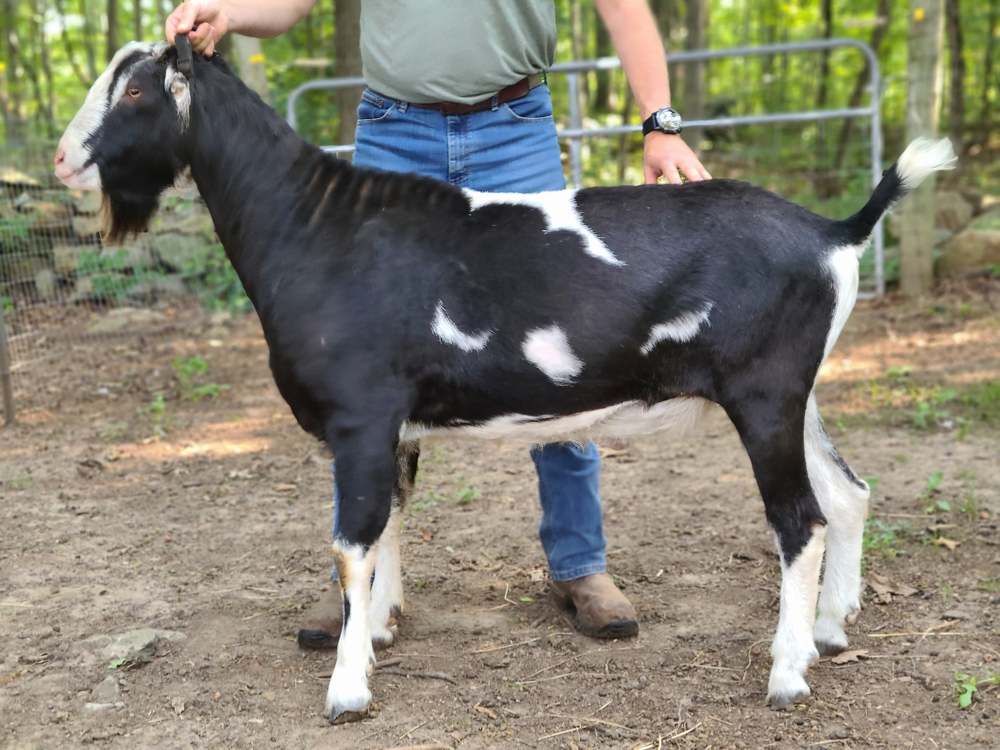
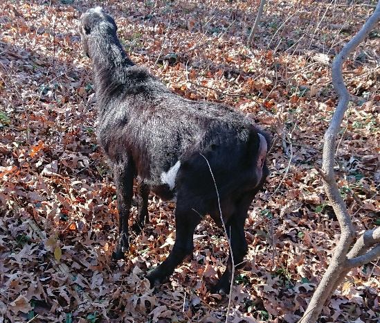

Current Herd Sires:
Ikkida Yoshi (Pedigree) 
Yoshi is a gentle giant - weighing in most recently at 230 lbs, he's got some serious length of body! Fortunately, he's just as sweet as he is tall - the bottom of the pecking order in the buck pen, and easy to handle even when in rut. He worked himself out of a job at his last farm, leaving behind a number of high-producing flashy babies. We're excited to see what he does here!
The Everlasting Farm Pepe (Pedigree) 
Pepe is a fantastic easy keeper - keeps his condition well with just hay and pasture, feet that rarely need trimming, and a thick glossy coat. He's a bit on the feisty side, but as long as he has a goat buddy to play with, he understands that humans are not interested in a good game of Head Butt. He's even made some progress at doing some work around the farm in the off season!